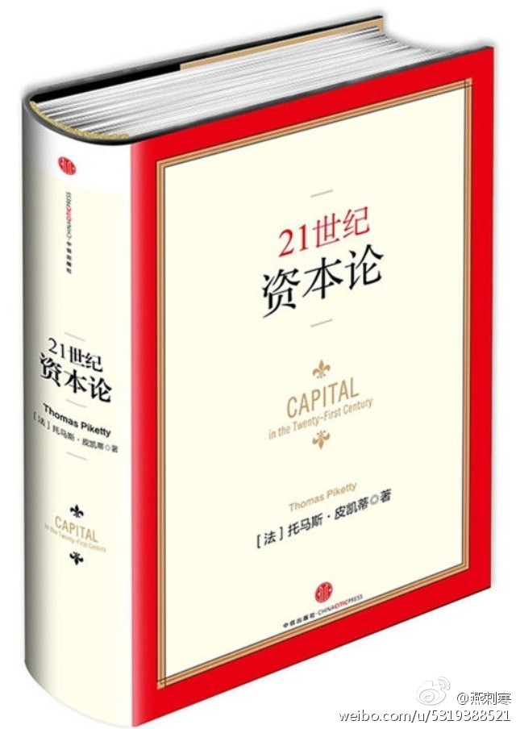

//@巴曙松:分享一段今天听到的金句：有好主意的人和老鼠🐭一样多；有好主意并且知道怎么做的和猫🐱一样多；有好主意，知道怎么做，并且能执行下去的和熊猫🐼一样少。 //@巴曙松:分享@燕刺寒:《21世纪资本论》系列读书笔记第二期：幻觉与现实 《21世纪资本论》：幻觉与现实 即日起，百度百家将陆续推出法国经济学家托马斯•皮凯蒂新著《21世纪资本论》的摘编。该书中文版由巴曙松研究员、陈剑博士等翻译，于2014年9月由中信出版社出版发行。 